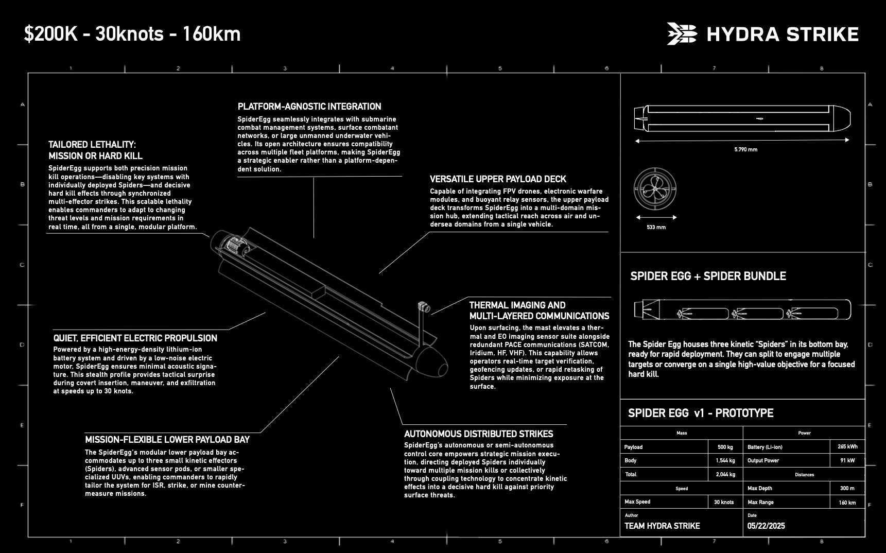
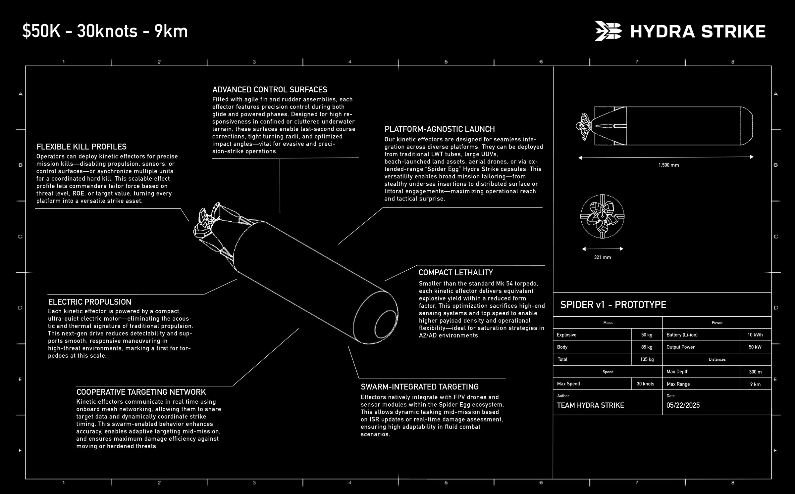

A modular, autonomous unmanned underwater vehicle (UUV) for ISR, strike, and mine countermeasure missions. Its mission-flexible payload architecture can deploy kinetic "Spiders," advanced sensors, FPV drones, and electronic warfare or relay systems across undersea, surface, and air domains, all from a single platform.
Spider Egg emphasizes stealth and survivability through quiet electric propulsion, multi-layered PACE communications, and minimal time exposed at the surface. Its open, platform-agnostic architecture lets it integrate with submarines, surface combatants, and large UUVs, delivering anything from a precise mission kill to a coordinated hard kill from one system.
Each Spider is a compact kinetic effector: 1.5 m long, with electric propulsion, agile fin and rudder control surfaces, and onboard mesh networking for cooperative targeting. It is smaller than a standard Mk 54 torpedo and can launch from LWT tubes, large UUVs, beach-launched assets, aerial drones, or a Spider Egg capsule.

